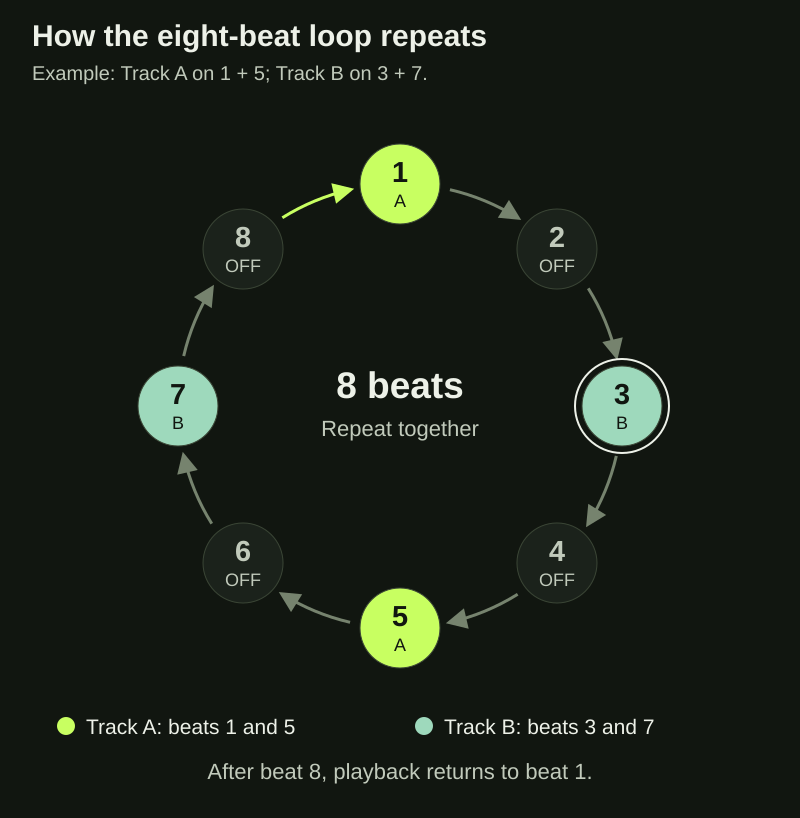
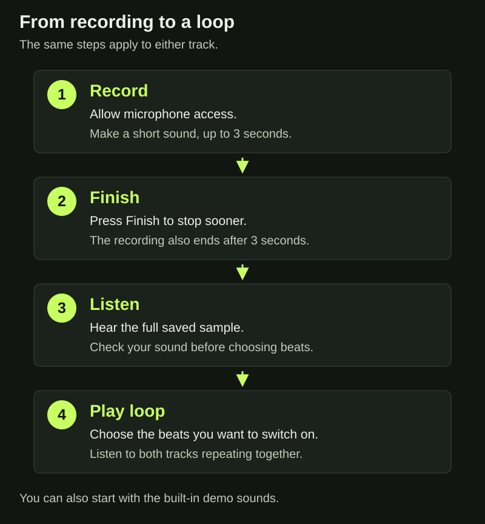
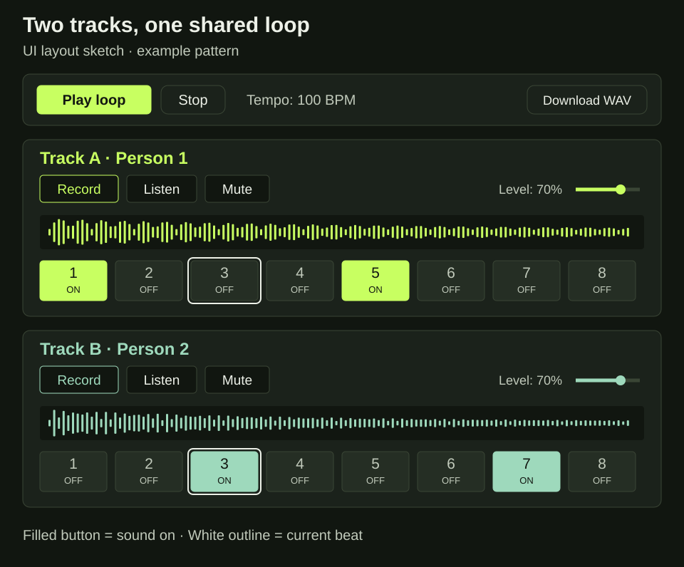

About the project
Loop Together is a browser instrument for making a short rhythm with another person. It responds to the design scenario, Collaboration & Social Creation. Two people can share one device, record their own sounds and arrange them into a loop.
My aim is to give people a simple place to start making music together. Users do not need to read music. They can start with the two demo sounds, then try a clap, a tap or a short voice sound.
From the prototypes to the final design
My tutor responded positively to the loop experiments in Area 1, but asked for more detail about what informed the design choices. This helped me see that I need to explain both what a feature does and why I chose it.
Prototype 1A used familiar recording and playback buttons. I wanted to explore a starting point that would not require users to learn many controls. Prototype 1B used a circle to show that the sound returns to the beginning. Prototype 1C used numbered boxes so users could choose exactly where a sound appears.
For the final version, I chose the boxes because placing sounds is an important part of making a rhythm together. A moving outline shows the current beat, keeping the idea of visible progress from the circle. This is a design choice, rather than a result proven by user testing.
The feedback prototypes explored a microphone meter, written instructions and animated sound bars. The final version combines short messages, a meter during recording and a waveform of each saved sound. These have different jobs: the message explains the state, the meter shows incoming sound, and the waveform shows the saved sample.
Recording and sharing control
The instrument has Track A and Track B. Each person can use one track. Both tracks have the same controls so each person has the same way to contribute.
Pressing Record asks for microphone access. The user can record for up to three seconds or press Finish sooner. The meter shows whether the microphone is picking up sound. After the recording is ready, Listen plays the whole sample.
I chose short recordings to keep the task focused on small sounds. If a new recording fails, the previous sound stays available. The microphone stops when recording ends.
Both people can take turns changing their sounds and discussing the result. This version supports working together on one device. It does not connect people on separate devices.
Making the loop
Each track has eight numbered beat buttons. Turning a button on places the sound at that beat. Play loop repeats the pattern from beat one to beat eight. The bright outline shows the current position.
Users can change the beats, adjust each track's volume or mute a track while listening. They need to stop playback before changing the tempo or recording again. Tempo means the speed of the beat.
Eight beats give beginners a small pattern to work with, although this limits longer ideas. Separate volume controls let the pair change the balance between their sounds. Mute helps them hear one part at a time.

UX: learning and control
I want the first action to be simple. Users can press Play loop with the demo sounds before giving microphone permission. This gives them a way to explore the beat buttons before recording their own sounds.
The recording process follows a short order: Record, Finish, Listen, then Play loop. Messages explain when the browser needs permission, when it is recording and when the sound is ready. During earlier development, I had problems with buttons that appeared to do nothing. Clear messages are important because a waiting state can otherwise look like a broken button.
Users can turn a beat off, change a volume or mute a track without starting again. A failed recording keeps the previous sound. These choices are intended to make trying ideas feel less risky.
Two tracks make both contributions visible, but sharing the controls still needs discussion. Peer testing should check whether both people take part and understand how their sounds fit together.

How the sound works
The extended technique is Looping & Sampling. Sampling means recording a sound and using it again. Looping means repeating a pattern.
The JavaScript uses MediaRecorder to capture the microphone sound. The Web Audio API then turns the recording into audio data that the browser can play. The code removes very quiet parts at the beginning and end so a tap can start closer to the beat.
During playback, the code prepares sounds slightly before they are needed. It uses the browser's audio clock to decide when each sound starts. The moving outline follows this timing.
Each sound in the loop plays for no longer than one beat. Longer recordings are cut short during the loop, but Listen still plays the full sample. Small fades at the start and end help reduce clicks. This choice suits short sounds better than long phrases.
UI: layout and visual choices
I kept the dark background and green colours from the prototypes to give the pages a consistent style. The bright Play button draws attention to the main action. Track A uses lime green, and Track B uses a softer green. Letters and ON/OFF labels provide another way to tell the tracks and beat states apart.
The page groups controls by what they affect. Play, Stop and tempo sit above both tracks because they control the shared loop. Record, Listen, Mute and volume stay inside each track because they affect one sound. I chose this layout to make the connection between a control and its result easier to follow.
Both tracks use the same order of controls. After learning one track, the user should be able to apply the same steps to the other. Arial, short labels and spaces between buttons keep the page simple. The waveform is based on the saved recording, so it gives information about the sound rather than adding decoration.

Accessibility and screen sizes
The interface uses text as well as colour. The current beat has an outline, and selected beats have ON labels. Keyboard users can reach the buttons and sliders, with a visible focus outline showing the selected control. Status messages are marked for screen readers. The page also includes a reduced-motion rule.
These features still need practical checks. For example, keyboard focus and the moving beat outline must be easy to tell apart. Text contrast and screen-reader messages also need checking. I do not want to assume that adding these features makes the whole page accessible.
The CSS changes the layout for different screen widths:
| Screen width | Layout |
|---|---|
| Below 840px | Session information moves above the tracks. At 540px and below, the beat buttons form two rows of four. |
| 840–1199px | A narrow session panel sits beside the tracks. |
| 1200–1600px | The panel and spacing become wider. |
| Above 1600px | The content stays within a maximum width of 1480px. |
The smaller layout keeps the same main tasks available. The wider layout adds space without stretching the controls across the whole screen. These rules still need checking in Chrome and Firefox.
Saving the result
Download WAV saves one eight-beat cycle using the current pattern, tempo, volumes and mute settings. The two people can keep or share this audio file.
Recordings are held in the current tab and are not uploaded by the instrument. Reloading the page clears them and resets the pattern. Users should download their result before leaving.
Peer testing and next steps
My tutor noted that the A2 testing form had useful questions but did not include the prototype links. This meant the planned class testing could not take place. I need to fix the links and check the complete testing process before asking peers to use the final version.
For the next test, I will ask two people to open the instrument, try the demo, record a sound each, change the pattern and download the result. I will watch where they pause or need help. Questions will include: Which button was unclear? How did you know recording had finished? How did you decide what each person would change?
I will record the date, actual comments and any changes made after the test. I still need to test microphone access, playback, stopping and downloading in Chrome and Firefox at the four screen sizes. These are planned checks, not completed results.
Code comments, commits and community records
The feedback also showed that my code needed more comments. I will add short notes explaining important decisions, such as why sounds are prepared ahead of time and why microphone tracks are stopped after recording. Comments should explain the reason for the code, not repeat every line.
Future commits should describe the actual change. For example, a change to permission messages could use the subject "Add microphone permission messages". I will keep the original commit history unchanged and export the real final-version logs.
The tutor could not access my community documentation. Before submission, I need to check the Miro permissions and the link from my homepage. I will record real discussions, feedback I give to peers and help exchanged during testing. I also need to respond to requests about access or missing information.
Current limits
The instrument supports two people on one device. It does not provide online sessions. Eight beats and short samples give a small starting point, but they limit longer ideas. Reloading clears the sounds and pattern. These limits need to be clear to users, and testing can help decide which changes are worth making next.
AI acknowledgement
I used OpenAI ChatGPT to help generate and revise parts of the HTML, CSS, JavaScript, this documentation and its explanatory diagrams.